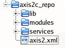

This document is intended to be a reference manual on Apache Axis2/C and covers its features and how to use it. Please send your feedback to Apache Axis2/C developer mailing list (axis-c-dev@apache.org)
This sections is aimed to help you to get a Web service up in quick time using Axis2/C and consume that service using an Axis2/C client.
First download the latest binary release form Apache Axis2/C download page . Once you download the correct binary that suits your platform, all that you require to get it running is to extract the package to a folder of your choice, set AXIS2C_HOME environment variable to point to this extracted folder. On Linux, you may have to set the LD_LIBRARY_PATH environment variable to include the lib folder (e.g. add $AXIS2C_HOME/lib). On Windows, you would have to add the lib folder to your PATH variable to include the Axis2/C dlls to your path. Now you should be able to cd to bin folder of this extracted folder and run the simple axis server in one command line and cd to bin/samples in another command shell and run any of the samples there (you may have to set the environment variables in this new shell as well). Please see the installation guide for more details.
Once you have Axis2/C up and running successfully, you can start writing your own services and clients. The following sections detail how to write your first service and client with Axis2/C.
Lets see how you could write your first Web service with Axis2/C and then how to deploy it.
The first service that we are going to write is named "hello" and would have a single operation named "greet" in the service. This "greet" operation, when invoked by client, would expect the client to send a greeting in the request, and would in turn send a greeting in the response. Following are example XML payloads exchanged between client and service:
Request:
<greet>
Hello Service!
<greet>
Response:
<greetResponse>
Hello Client!
<greetResponse>
The steps to be followed when implementing a service with Axis2/C include:
Following is the implementation of the greet operation:
axiom_node_t *
axis2_hello_greet(const axis2_env_t *env, axiom_node_t *node)
{
axiom_node_t *client_greeting_node = NULL;
axiom_node_t *return_node = NULL;
AXIS2_ENV_CHECK(env, NULL);
if (node)
{
client_greeting_node = AXIOM_NODE_GET_FIRST_CHILD(node, env);
if (client_greeting_node && AXIOM_NODE_GET_NODE_TYPE(client_greeting_node, env) == AXIOM_TEXT)
{
axiom_text_t *greeting = (axiom_text_t *)AXIOM_NODE_GET_DATA_ELEMENT(client_greeting_node, env);
if (greeting && AXIOM_TEXT_GET_VALUE(greeting , env))
{
axis2_char_t *greeting_str = AXIOM_TEXT_GET_VALUE(greeting, env);
printf("Client greeted saying \"%s\" \n", greeting_str);
return_node = build_greeting_response(env, "Hello Client!");
}
}
}
else
{
AXIS2_ERROR_SET(env->error, AXIS2_ERROR_SVC_SKEL_INVALID_XML_FORMAT_IN_REQUEST, AXIS2_FAILURE);
printf("ERROR: invalid XML in request\n");
return_node = build_greeting_response(env, "Client! Who are you?");
}
return return_node;
}
This function implements the business logic for the greet operation. We would be calling this function from our implementation of the invoke function. Basically this function receives the request payload as an axiom_node, process it to understand the request logic and prepares the response as an axiom_node and returns that.
Service skeleton creation could be implemented like the following:
axis2_svc_skeleton_t *
axis2_hello_create(const axis2_env_t *env)
{
axis2_svc_skeleton_t *svc_skeleton = NULL;
svc_skeleton = AXIS2_MALLOC(env->allocator,
sizeof(axis2_svc_skeleton_t));
svc_skeleton->ops = AXIS2_MALLOC(
env->allocator, sizeof(axis2_svc_skeleton_ops_t));
svc_skeleton->func_array = NULL;
svc_skeleton->ops->free = hello_free;
svc_skeleton->ops->invoke = hello_invoke;
return svc_skeleton;
}
The create function creates and returns a new axis2_svc_skeleton instance. The most important aspect to notice about this function is the function pointer assignments to map the interface operations to the corresponding functions of our implementation.
The invoke method of the service skeleton is the point of entry for invoking the operations. Hence in our implementation of the invoke function, we have to define how the operations are to be called.
axiom_node_t* AXIS2_CALL
hello_invoke(axis2_svc_skeleton_t *svc_skeleton,
const axis2_env_t *env,
axiom_node_t *node,
axis2_msg_ctx_t *msg_ctx)
{
return axis2_hello_greet(env, node);
}
In our implementation of the hello_invoke, we call the function
implementing the greet operation. As we have only one operation, the task is
simple here. If we had multiple operations, we would have to look into the
information in message context to map to the exact operation.
Axis2/C engine would call the invoke method with an axiom_node, containing
the request payload and axis2_msg_ctx instance containing the message context
information, in addition to service skeleton and environment pointers. We
could use the message context to extract whatever information we deem
necessary related to the incoming message. The Axis2/C engine expects the
invoke method to return a pointer to an axiom_node, representing the response
payload.
Here is the complete source code for the service : hello.c
services.xml file contains details on the service that would be read by the Axis2/C deployment engine during deployment time. Following shows the contents for the service.xml file for hello service.
<service name="hello">
<parameter name="ServiceClass" locked="xsd:false">hello</parameter>
<description>
Quick start guide hello service sample.
</description>
<operation name="greet"/>
</service>
The service configuration shown above specifies that the name of the
service is hello.
The value of the "serviceclass" , "hello" in this case, will be mapped to the
service implementation by the deployment engine as libhello.so on Linux or
hello.dll on windows.
description element contains a brief description of the service.
There can be one or more operation elements. For this sample, we only have
one operation, with the name "greet"
You can compile the service sample as shown below.
On Linux:
gcc -shared -olibhello.so -I$AXIS2C_HOME/include -L$AXIS2C_HOME/lib -laxis2 hello.c
On Windows
to compile,
cl.exe /D "WIN32" /D "_WINDOWS" /D "_MBCS" /D "AXIS2_DECLARE_EXPORT" /D "AXIS2_SVR_MULTI_THREADED" /w /nologo $(AXIS2_INCLUDE_PATH)$(APACHE_INCLUDE_PATH) /I hello.c
In order to make the service available to be consumed by clients, we have to deploy the service. To deploy the service, you have to create a folder in AXIS2C_HOME/services folder named hello and copy the services.xml file and the shared library file (libhello.so on Linux or hello.dll on Windows) into that folder
To verify that your service has been correctly deployed, you can start the simple axis server and then browse the list of deployed services using a Web browser. To start the simple axis server you can go to AXIS2C_HOME/bin folder and run the executable axis2_http_server. The default url that you can test the service list with is http://localhost:9090/axis2/services. You should get an entry for the hello service on the page that you get.
Now that you know how to write a service with Axis2/C, lets see how you could write a client to consume that service. The request payload that the client would be sending to the service was described in the previous section. The client has to prepare the payload, send it to the service and then receive and process the response.
The steps to be followed when implementing a client with Axis2/C include:
options = axis2_options_create(env);
address = "http://localhost:9090/axis2/services/hello";
endpoint_ref = axis2_endpoint_ref_create(env, address);
AXIS2_OPTIONS_SET_TO(options, env, endpoint_ref);
In the above shown section of code, an axis2_options instance is created first. Then an endpoint reference instance is created with the address of the location of the service. Finally, the created endpoint is set as the "to" address of the options. The "to" address indicates where the request should be sent to.
svc_client = axis2_svc_client_create(env, client_home);
AXIS2_SVC_CLIENT_SET_OPTIONS(svc_client, env, options);
payload = build_om_request(env);
ret_node = AXIS2_SVC_CLIENT_SEND_RECEIVE(svc_client, env, payload);
After creating and preparing the options, the next step is to create a service client instance and use it to send the request and receive the response. The code fragment given above shows how options could be set on top of service client and how to invoke the send receive operation with request payload. Once the response is received, the response payload would be stored in the ret_node, which is a pointer to an axiom_node and that could be used to further process the response.
Here is the complete source code for the client : hello.c
You can compile the client sample as shown below.
On Linux:
gcc -o hello -I$AXIS2C_HOME/include -L$AXIS2C_HOME/lib -laxis2 hello.c
On Windows
to compile,
cl.exe /nologo /D "WIN32" /D "_WINDOWS" /D "_MBCS" $(AXIS2_INCLUDE_PATH) hello.c /c
to link,
link.exe /nologo /LIBPATH:$(AXIS2_LIBS) /LIBPATH:$(LIBXML2_INSTALL_DIR)\lib /LIBPATH:$(APACHE_INSTALL_DIR)\lib /LIBPATH:$(ZLIB_INSTALL_DIR)\lib *.obj $(AXIS2_UTIL).lib $(AXIOM).lib $(AXIS2_PARSER).lib $(LIBS) $(AXIS2_ENGINE).lib /OUT:hello.exe
To run the client, make sure you have started the simple axis server and run the hello executable.
Repository is a folder where all Axis2/C related configuration as well as services and modules are located. The following shows the folder structure of the repository:
Here the name of the repository folder is axis2c_repo. On your system, you can choose this to be any folder name of your choice. There are three sub folders possible in the repository. In addition to that, the axis2.xml configuration file is also located in the repository. Following table describes the purpose of repository contents.
| Folder Name | Description |
|---|---|
lib |
lib folder contains the libraries required to run Axis2/C
engine. While you can afford to have the shared libs of Axis2/C in a
location of your choice, the dynamically loaded shared libs, parser,
transport receiver and transport sender has to be there in the
repository lib folder. |
modules |
modules folder contains the modules deployed with Axis2/C. Each
module deployed would have its own sub folder inside modules folder.
As an example, if addressing module is deployed, then there would be
a sub folder named addressing inside the modules folder of the
repository. |
services |
services folder contains the services deployed with Axis2/C.
Each service deployed would have its own sub folder inside services
folder, or would live inside one of the sub folders. |
axis2.xml |
axis2.xml file is the configuration file of Axis2/C. |
Both clients as well as services written using Axis2/C could use the same repository. However one can use one repository for the server side and another one for the client side. The services folder makes sense, only when the repository is used by the server side. When the repository is used by the client, services folder, if present, would not be useful.
The Axis2/C binary distribution, when extracted, could be considered ready to be used as your repository folder. If you are building Axis2/C from source distribution, when you build the source, including the samples, the installation destination would be ready to be used as your repository folder.
The simple axis server (that is axis2_http_server binary), the client samples as well as the httpd module (Axis2 Apache2 module) requires the repository folder to be specified in order to run correctly.
As described earlier, all modules are placed inside modules folder of the
repository and each module would have its own sub folder within modules
folder.
The folder in which a module is placed must have the same name as the module
name. As an example, the addressing module would be placed in a sub folder
named addressing.
Inside the folder corresponding to a module, the shared library implementing the module and the module configuration file, module.xml, would be placed. It is a must that inside each folder representing a module that these two files are present. module.xml file would be processed by the deployment engine to find out module specific information such as module name, set of handlers and the flows into which those handlers are to be added etc.
All services are placed inside services folder of the repository and each service would be in one of the sub folders within services folder. Axis2/C has a concept called service groups, where there could be one or more services inside a service group. A single stand alone service would be assigned a service group with the same name as that of the service by the Axis2/C engine for the purpose of easy handling. For this reason, sub folders in services folder correspond to service groups.
A service, if deployed as a stand alone service, would live inside a folder with the same name as that of the service. As an example, the echo service would be placed in a sub folder named echo. Inside the folder corresponding to a service, the shared library implementing the service and the service configuration file, services.xml, would be placed. It is because of the fact that the engine treats the folders to represent service groups and not a single service, the configuration file is called services.xml. However, it is alway possible to place a single service inside a single folder, as that is the most common use case.
Each sub folder within the services folder should have at least one shared lib implementing a service and a services.xml file. If it is a real service group, there could be multiple shared libs, yet only one services.xml file configuring all those services. services.xml file would be processed by the deployment engine to find out service group and service specific information such as service group name, service name, set of operations for each service etc.
We have already seen how to write a service in quick start guide section of this manual. This section would cover the service API of Axis2/C in a bit more detail.
The axis2_svc_skeleton is an interface. Axis2/C does not provide any concrete implementation of this interface. It is the responsibility of the service implementer to implement this interface. To implement the interface, one should implement functions adhering to the function pointer signatures of the members of axis2_svc_skeleton_ops struct. Then, a create function should be written, to create an axis2_svc_skeleton instance, and assign the implementing functions to members of the ops member of service skeleton.
The following table details the function signatures to be implemented by a service.
| Function Signature | Description |
|---|---|
int (AXIS2_CALL *
free )( axis2_svc_skeleton_t *svc_skeli,
const axis2_env_t *env);
|
Frees the service implementation instance. |
axiom_node_t *(AXIS2_CALL*
invoke )( axis2_svc_skeleton_t *svc_skeli,
const axis2_env_t *env,
axiom_node_t *node,
axis2_msg_ctx_t *msg_ctx);
|
Invokes the service implementation. You have to implement the logic to call the correct functions in this method based on the name of the operation being invoked. |
int AXIS2_CALL
math_free(axis2_svc_skeleton_t *svc_skeleton,
const axis2_env_t *env)
{
if (svc_skeleton->ops)
{
AXIS2_FREE(env->allocator, svc_skeleton->ops);
svc_skeleton->ops = NULL;
}
if (svc_skeleton)
{
AXIS2_FREE(env->allocator, svc_skeleton);
svc_skeleton = NULL;
}
return AXIS2_SUCCESS;
}
The above code shows the free method implementation of the math sample.
axiom_node_t* AXIS2_CALL
math_invoke(axis2_svc_skeleton_t *svc_skeleton,
const axis2_env_t *env,
axiom_node_t *node,
axis2_msg_ctx_t *msg_ctx)
{
if (node)
{
if (AXIOM_NODE_GET_NODE_TYPE(node, env) == AXIOM_ELEMENT)
{
axiom_element_t *element = NULL;
element = (axiom_element_t *)AXIOM_NODE_GET_DATA_ELEMENT(node, env);
if (element)
{
axis2_char_t *op_name = AXIOM_ELEMENT_GET_LOCALNAME(element, env);
if (op_name)
{
if (AXIS2_STRCMP(op_name, "add") == 0)
return axis2_math_add(env, node);
if (AXIS2_STRCMP(op_name, "sub") == 0)
return axis2_math_sub(env, node);
if (AXIS2_STRCMP(op_name, "mul") == 0)
return axis2_math_mul(env, node);
if (AXIS2_STRCMP(op_name, "div") == 0)
return axis2_math_div(env, node);
}
}
}
}
printf("Math service ERROR: invalid operation invoked\n");
return node;
}
The above code fragment from math sample shows how the correct method to be invoked could be picked from the operation name that comes in the message context.
There are two more methods that a service should implement. Once a service is deployed, the message receiver of the Axis2/C engine would need to create a service instance at runtime for the purpose of invoking it. For this, it looks for a method named axis2_create_instance and calls it on the service shared library. The engine also looks to a function named axis2_remove_instance for clean up purposes in the shared library.
AXIS2_EXPORT int axis2_get_instance(struct axis2_svc_skeleton **inst,
const axis2_env_t *env)
{
*inst = axis2_math_create(env);
if (!(*inst))
{
return AXIS2_FAILURE;
}
return AXIS2_SUCCESS;
}
AXIS2_EXPORT int axis2_remove_instance(axis2_svc_skeleton_t *inst,
const axis2_env_t *env)
{
axis2_status_t status = AXIS2_FAILURE;
if (inst)
{
status = AXIS2_SVC_SKELETON_FREE(inst, env);
}
return status;
}
Note that service instantiation happens per request. That means for each request, the create method would be called and a new axis2_svc_skeleton instance would be created.
The primary client API to be used with Axis2/C is axis2_svc_client, the service client API. This is meant to be an easy to use API for consuming services. If you want to do more complex tasks, such as invoking a client inside a module, or wrap the client API with another interface, you may need to use the axis2_op_client, operation client, API. However for general purposes, service client is sufficient.
Behaviour of the service client could be fine tuned with the options passed to service client. You can set the options by creating axis2_options instance. The bare minimum that you need to set is the endpoint URI where the request is to be sent to. An example of this was given in the quick start guide section.
The service client interface serves as the primary client interface for consuming services. You can set the options to be used by the service client and then invoke an operation on a given service. There are several ways of invoking a service operation. The way of invoking an operation depends on 3 things. Those are,
Many ways of service operation invoking scenarios can be obtained by combining these 3 factors. Service client interface provides the necessary parameters for above 3 tasks.
Deciding the Message Exchange Pattern (MEP)
There are 2 message exchange patterns.
In out_only MEP the client doesn't expect a reply from the server. Service client provides 2 methods for executing out_only operations.
Sends a message and forget about it. This method is used to interact with a service operation whose MEP is In-Only. That is, there is no opportunity to get an error from the service via this method; one may still get client-side errors, such as host unknown etc.
| Parameter | Description |
|---|---|
| axis2_svc_client_t *svc_client | svc_client pointer to service client struct |
| const axis2_env_t *env | env pointer to environment struct |
| const axis2_qname_t *op_qname | qname of the service operation which is going to be execute |
| const axiom_node_t *payload | payload pointer to OM node representing the XML payload to be sent |
return type :- void
If a fault triggers on server side, this method would report an error back to the caller.
| Parameter | Description |
|---|---|
| axis2_svc_client_t *svc_client | svc_client pointer to service client struct |
| const axis2_env_t *env | env pointer to environment struct |
| const axis2_qname_t *op_qname | qname of the service operation which is going to be execute |
| const axiom_node_t *payload | payload pointer to OM node representing the XML payload to be sent |
return type:- axis2_status_t
return AXIS2_SUCCESS on success, else AXIS2_FAILURE.
Both these methods call AXIS2_OP_CLIENT_EXECUTE inside. But fire_and_forget method set the blocking parameter FALSE and send_robust set the blocking parameter TRUE. Hence it will block for the fault trigger.
In in_out MEP, the client expect a reply from the server. The axis2_svc_client_send_recieve and axis2_send_receive_non_blocking supports this MEP pattern.
Sends XML request and receives XML response.
| Parameter | Description |
|---|---|
| axis2_svc_client_t *svc_client | svc_client pointer to service client struct |
| const axis2_env_t *env | env pointer to environment struct |
| const axis2_qname_t *op_qname | qname of the service operation which is going to be execute |
| const axiom_node_t *payload | payload pointer to OM node representing the XML payload to be sent |
Return pointer to OM node representing the XML response. The caller owns the returned node. This method blocks until the response arrives.
Sends XML request and receives XML response, but does not block for response.
| Parameter | Description |
|---|---|
| axis2_svc_client_t *svc_client | svc_client pointer to service client struct |
| const axis2_env_t *env | env pointer to environment struct |
| const axis2_qname_t *op_qname | qname of the service operation which is going to be execute |
| const axiom_node_t *payload | payload pointer to OM node representing the XML payload to be sent |
| axis2_callback_t *callback | callback pointer to callback struct used to capture response |
Return type :- void
This method will not block for the response. Instead it sets a call back to
capture the response.
Synchronous/Asynchronous behaviour (Blocking/Non-Blocking)
This will determine whether the client will block (Sysnchronous) or
non-block (asynchronous) for the response in a in-out MEP scenario. This can
be decided by using
axis2_svc_client_send_receive or
axis2_svc_client_send_receive_non_blocking methods.
Two-way or One-way transport
If the transport is Two-way transport then only one channel is used .If
the Transport is One-way then the response will come from a seperate
chanel.
If we want to set a seperate channel for the response the following
set_use_seperate_listener option has to be set.
See ApendixD for further details.
If you want to consume Web services using REST style calls you can use either the HTTP POST method or HTTP GET method.
The following example shows how to enable a REST style invocation using different HTTP methods.
AXIS2_OPTIONS_SET_PROPERTY(options, env, AXIS2_ENABLE_REST,AXIS2_VALUE_TRUE);
if (AXIS2_TRUE == method_get )
{
AXIS2_OPTIONS_SET_PROPERTY(options, env, AXIS2_HTTP_METHOD, AXIS2_HTTP_HEADER_GET);
}
Default value of REST is set to HTTP POST Method. If someone need to change it to HTTP GET method.
AXIS2_OPTIONS_SET_PROPERTY(options, env, AXIS2_HTTP_METHOD, AXIS2_HTTP_HEADER_GET);
can be used.
Axis2/C allows you to send and receive binary data with SOAP messages using MTOM/XOP conventions. When sending attachments, you have to use service client (svc_client) to perform the send and receive operation, and give the binary data as an array.
In order to send the attachment you need to build om node including that attachment as a node. We need to give our built om structure to service client to perform send and receive operations.
In the above sample payload shown, we place our image file as text within an image element
image_om_ele = axiom_element_create(env,mtom_om_node, "image", ns1,&image_om_node); data_handler = axiom_data_handler_create(env, image_name, "image/jpeg"); data_text = axiom_text_create_with_data_handler(env, image_om_node,data_handler, &data_om_node);
When sending attachments, you can configure the client either to send the attachment in the optimised format or in non optimised format. By setting an option
AXIS2_OPTIONS_SET_ENABLE_MTOM(options,env,AXIS2_TRUE);or setting
<enableMtom>true</enableMtom>in axis2.xml
If the attachment is sent in binary optimised format, the file content would be sent as it is, out of the SOAP body, using MIME headers and the payload would have an XOP:Include element, referring to the MIME part that contains the binary attachment. In case of binary non optimised format, the attachment content would be sent in the payload itself, as a base64 encoded string.
Modules have the concept of being available and engaged. Available means modules are deployed in the system but not activated. They will be activated only after being engaged. Normally a module is a set of handlers. Every module should come with its own module.xml file . This module.xml file specifies the module specific handlers and to what phases they are to be deployed in the axis2 handler chain. Some of the module specific handlers may be put in to system predefined phases.In that case, module.xml file should specify where to put the handlers relative to the others in that phase. Some times module may define its own phase. In that case some of the module specie handlers may be put in to that phase. The handlers which are added to the system predefined phases (global handlers) are invoked for every message which comes in/out to the system. The handlers in the module specific phase are invoked only for the messages aiming at the operations which engaged that module. Engaging a module means correctly adding the handlers of a particular module to a phase. A service, operations or the system may engage a module. Once the module is engaged the handlers and the operations defined in the module are added to the entity that engaged them.
Before engaging a module following steps has to be followed.
The following is an example of engaging a sample module called logging module to the axis2c system.
In the module.xml file, the handlers of the module and the phases to which they are to be added has to be specified. Below is the module.xml file of the sample logging module.
| <module name="logging" class="axis2_mod_log">
<inflow> <handler name="LoggingInHandler" class="axis2_mod_log"> <order phase="PreDispatch"/> </handler> </inflow> <outflow> <handler name="LoggingOutHandler" class="axis2_mod_log"> <order phase="MessageOut"/> </handler> </outflow> <Outfaultflow> <handler name="LoggingOutHandler" class="axis2_mod_log"> <order phase="MessageOut"/> </handler> </Outfaultflow> </module> |
The module specific phase has to de added after the system predefined phases. The following example shows where to add the module specific phases.
| <phaseOrder type="inflow">
<!-- System pre defined phases --> <phase name="TransportIn"/> <phase name="PreDispatch"/> <phase name="Dispatch" class="org.apache.axis2.engine.DispatchPhase"> <handler name="AddressingBasedDispatcher" class="axis2_engine"> <order phase="Dispatch"/> </handler> <handler name="RequestURIBasedDispatcher" class="axis2_engine"> <order phase="Dispatch"/> </handler> <handler name="SOAPActionBasedDispatcher" class="axis2_engine"> <order phase="Dispatch"/> </handler> <handler name="SOAPMessageBodyBasedDispatcher" class="axis2_engine"> <order phase="Dispatch"/> </handler> <handler name="InstanceDispatcher" class="org.apache.axis2.engine.InstanceDispatcher"> <order phase="PostDispatch"/> </handler> </phase> <!-- System pre defined phases --> <!-- After Postdispatch phase module author or or service author can add any phase he want --> <phase name="OperationInPhase"/> <phase name=""/> </phaseOrder> <phaseOrder type="outflow"> <!-- user can add his own phases to this area --> <phase name="OperationOutPhase"/> <phase name=""/> <!--system predefined phase--> <!--these phase will run irrespective of the service--> <phase name="MessageOut"/> </phaseOrder/> <phaseOrder type="INfaultflow"> <!-- user can add his own phases to this area --> <phase name="OperationInFaultPhase"/> <phase name=""/> </phaseOrder> <phaseOrder type="Outfaultflow"> <!-- user can add his own phases to this area --> <phase name="OperationOutFaultPhase"/> <phase name=""/> <phase name="PolicyDetermination"/> <phase name="MessageOut"/> </phaseOrder> |
As mentioned in the above example, the user or module author can handle his own phases after system predefined phases.In the above example there are no specific phases for the logging module. That is all the module specific handlers are added to the system predefined phases as mentioned in the module.xml file.
Following is an example of engaging the logging module to the echo service.This can be done by simply adding <module ref ="logging"/> in the service.xml file. This informs the Axis2 engine that the module "logging" should be engaged for this service. The handler inside the module will be executed in their respective phases as described by the "module.xml".
| <service name="echo">
<module ref ="logging"/> <parameter name="ServiceClass" locked="xsd:false">echo</parameter> <description> This is a testing service , to test the system is working or not </description> <operation name="echoString"> <!--messageReceiver class="axis2_receivers" /--> <parameter name="wsamapping" >http://ws.apache.org/axis2/c/samples/echoString</parameter> </operation> </service> |
If we want to engage the module for every service deployed in the axis2c system, we can add the above entry in the axis2.xml file. This will inform the Axis2/C system to invoke the handler inside the module specific phases for every message coming to any service deployed within the system.
In the client side if the above <module ref ="logging"/> is added in the axis2.xml the module specific handlers will invoke for every request the client sends.If only a particular client wants to engage the module it can be done by engaging the module programmatically. This can be done by adding the following line in the client code after setting the options.
AXIS2_SVC_CLIENT_SET_OPTIONS(svc_client, env, options);
AXIS2_SVC_CLIENT_ENGAGE_MODULE(svc_client, env, "module name");
So it is very easy engaging modules in Axis2/c and it also gives a higher flexibility.
WS-Addressing provides mechanisms to address Web services and messages. With Axis2/C, you can use both WS-Addressing version 1.0 as well as the submission version.
WS-Addressing can be enabled in the client side using 2 different methods in Axis2/C.
Adding <module ref="addressing"/> in the client side axis2.xml file will add addressing capability to every message the Axis2/C clients send.
AXIS2_SVC_CLIENT_ENGAGE_MODULE(svc_client, env,AXIS2_MODULE_ADDRESSING);
There are two basic requirements for using WS-Addressing on client side with Axis2/C. One is that you have to provide a WS-Addressing action at message level. The other is that you have to enable the use of WS-Addressing at client level.
address = "http://localh ost:9090/axis2/services/echo";
endpoint_ref = axis2_endpoint_ref_create(env, address);
/* Setup options */
options = axis2_options_create(env);
AXIS2_OPTIONS_SET_TO(options, env, endpoint_ref);
In the above code segment the message destination endpoint(wsa:To) is set using the AXIS2_OPTIONS_SET_TO(options, env, endpoint_ref) macro. endpoint_ref is created using the address string. Another important parameter in addressing is the wsa:action parameter. This is set from the function shown below.
AXIS2_OPTIONS_SET_ACTION(options,env,"http://ws.apache.org/axis2/c/samples/echoString")
In addition to the action and to there are other WS-Addressing related SOAP headers that could be sent in a message. Axis2/C has support to set those headers as options at client level. The following functions are used to set them.
AXIS2_OPTIONS_SET_REPLY_TO(options, env, reply_to)
Sets the wsa:Replyto header. The "ReplyTo" header contains the endpoint to send reply messages The Replyto header is required when the response comes in a seperate channel. (when using dual chanel)
AXIS2_OPTIONS_SET_FAULT_TO(options, env, fault_to)
Sets the wsa:FaultTo header.This contains the endpoint to direct fault messages. If "FaultTo" is absent one may use "ReplyTo" endpoint instead.
AXIS2_OPTIONS_SET_FROM(options, env, from)
Some times receiving endpoint requires to know the original sender of the message.wsa:From header is used in those cases.The above function sets the wsa:From header.
AXIS2_OPTIONS_SET_RELATES_TO(options, env, relates_to)
sets the wsa:RelatesTo header.This header contains a uri value that must be the message ID of a previously exchanged message.It defines the current message relationship to the message being identified.
A module is an extension point in the Axis2/C engine. Modules are used to improve the quality of service in the Axis2/C engine.A SOAP message may contain any number of header blocks. These header blocks provide various processing information. In Axis2/C, these various header blocks are processed by modules. Some times modules may add header blocks to a SOAP message.
Normally a module is a collection of handlers. So writing a module mainly consists of writing handlers. Axis2/C provides two basic interfaces for writing a module. They are axis2_module and axis2_handler.
Every module should have 3 basic functions as defined in the axis2_modules_ops.
axis2_status_t (AXIS2_CALL * init ) (axis2_module_t *module, const
axis2_env_t *env , axis2_conf_ctx_t *conf_ctx , axis2_module_desc_t
*module_desc)
The module initialisation is done here.
axis2_status_t (AXIS2_CALL * shut_down ) (axis2_module_t *module, const
axis2_env_t *env )
Handler created function are stored in a hash map. This function will remove them from the hash map.
axis2_status_t (AXIS2_CALL *fill_handler_create_func_map )
(axis2_module_t *module, const axis2_env_t *env )
This function fills the hash map of handler create functions for the module.
The module developer implements these functions in its implementation file. When creating a module, the base struct functions will be assigned these implemented functions.
The following example shows the creation of logging module.
axis2_module_t *
axis2_mod_log_create(const axis2_env_t *env)
{
axis2_module_t *module = NULL;
module = AXIS2_MALLOC(env->allocator,
sizeof(axis2_module_t));
module->ops = AXIS2_MALLOC(
env->allocator, sizeof(axis2_module_ops_t));
module->ops->shutdown = axis2_mod_log_shutdown;
module->ops->init = axis2_mod_log_init;
module->ops->fill_handler_create_func_map =
axis2_mod_log_fill_handler_create_func_map;
return module;
}
The following code segmement shows the adding of handler create functions to the module hash map.
axis2_status_t AXIS2_CALL
axis2_mod_log_fill_handler_create_func_map(axis2_module_t *module,
const axis2_env_t *env)
{
AXIS2_ENV_CHECK(env, AXIS2_FAILURE);
module->handler_create_func_map = axis2_hash_make(env);
if(!module->handler_create_func_map)
{
AXIS2_ERROR_SET(env->error, AXIS2_ERROR_NO_MEMORY,
AXIS2_FAILURE);
return AXIS2_FAILURE;
}
axis2_hash_set(module->handler_create_func_map, "LoggingInHandler",
AXIS2_HASH_KEY_STRING, axis2_log_in_handler_create);
axis2_hash_set(module->handler_create_func_map, "LoggingOutHandler",
AXIS2_HASH_KEY_STRING, axis2_log_out_handler_create);
return AXIS2_SUCCESS;
In the above example the "logging" module adds two handlers. So these handler creation functions are added to the hash map.
Handler is the smallest unit of execution in the Axis2/C engine's execution flow. The engine could have two flows, the in-flow and the out-flow. A flow is a collection of phases and a phase in turn is a collection of handlers. A handler is invoked when the phase within which it lives is invoked. Axis2/C defines an interface called axis2_handler , which is used to create handlers.
The following example shows the creation of the in handler in the logging module.
AXIS2_EXTERN axis2_handler_t* AXIS2_CALL
axis2_log_in_handler_create(const axis2_env_t *env,
axis2_qname_t *qname)
{
axis2_handler_t *handler = NULL;
AXIS2_ENV_CHECK(env, NULL);
handler = axis2_handler_create(env);
if (!handler)
{
return NULL;
}
/* handler init is handled by conf loading, so no need to do it here */
/* set the base struct's invoke op */
if (handler->ops)
handler->ops->invoke = axis2_log_in_handler_invoke;
return handler;
}
In the above example the axis2_log_in_handler_invoke function is assigned to axis2_handler invoke function pointer. Invoke is called to do the actual work assigned to the handler. The phase that owns the handler is responsible for calling invoke of the handler. Those structs that implement the interface of the handler should implement the logic for invoke and assign the respective function pointer to invoke operation of the ops struct.
The following code segment shows the "logging" module in handler invoke function.
axis2_status_t AXIS2_CALL
axis2_log_in_handler_invoke(struct axis2_handler *handler,
const axis2_env_t *env,
struct axis2_msg_ctx *msg_ctx)
{
axiom_soap_envelope_t *soap_envelope = NULL;
axiom_node_t *ret_node = NULL;
AXIS2_ENV_CHECK( env, AXIS2_FAILURE);
AXIS2_PARAM_CHECK(env->error, msg_ctx, AXIS2_FAILURE);
AXIS2_LOG_INFO(env->log, "Starting logging in handler .........");
printf("\n\nStarting logging in handler .........\n\n");
soap_envelope = AXIS2_MSG_CTX_GET_SOAP_ENVELOPE(msg_ctx, env);
if(soap_envelope)
{
AXIOM_SOAP_ENVELOPE_GET_BODY(soap_envelope, env);
ret_node = AXIOM_SOAP_ENVELOPE_GET_BASE_NODE(soap_envelope, env);
if(ret_node)
{
axis2_char_t *om_str = NULL;
om_str = AXIOM_NODE_TO_STRING(ret_node, env);
if (om_str)
{
AXIS2_LOG_INFO(env->log, "Input msg: %s", om_str);
printf("Input msg: %s", om_str);
}
}
}
return AXIS2_SUCCESS;
}
After writing the module, the module.xml file should be written. The module.xml file contains all the configuration details for a particular module.See Enging a module part for more details. Some of the important details in the module.xml file can be summerized as follows.
The handlers defined in a module can be added to Axis2/C system global phases or the module specific phases.
simple axis server is the inbuilt server of the Axis2/C.
./axis2_http_server [-p PORT] [-t TIMEOUT] [-r REPO_PATH][-l LOG_LEVEL] [-f LOG_FILE]
$./axis2_http_serverThen it takes
port -> 9090
repo path -> ../
time_out -> AXIS2_HTTP_DEFAULT_SO_TIMEOUT (30000 s)
log_level -> AXIS2_LOG_LEVEL_DEBUG
log_file -> axis2.log
[-p PORT]
This option specifies the port that server should start.
Once started the server listen for requests that will come to this port.
[-t TIMEOUT]
Timeout gives time period that the server should listen without any
requests. After that it quits.
[-r REPO_PATH]
This is the repository path to pick up the services and axis2.xml
[-l LOG_LEVEL]
There are several log levels available. One could specify the log level we needed.
LOG_LEVEL can be one of following<
AXIS2_LOG_LEVEL_CRITICAL - Log critical errors only
AXIS2_LOG_LEVEL_ERROR - Log errors critical errors
AXIS2_LOG_LEVEL_WARNING - Log warnings and above
AXIS2_LOG_LEVEL_INFO - Log info and above
AXIS2_LOG_LEVEL_DEBUG - Log debug and above (default)
AXIS2_LOG_LEVEL_TRACE - Log trace messages
[-f LOG_FILE]
One could specify a log file , when need to use a file other that
default file (axis2.log).
To build Axis2/C with apache module, One need to give configuration options as
On Linux platform
./configure --with-apache2=[path to apache directory]
NOTE: Some apache2 distributions install APR (Apache Portable Run-time) include files in a separate location which is required to build mod_axis2. In that case use: ./configure --with-apache2="<apache2 directory>" --with-apr="<apr include files location>" [other configure options]
Then build the source tree
make
make install
This will install mod_axis2.so into your "<your_path_to_axis2c>/lib"
On Win32 platform
Provide the apache2 location in configure.in file in APACHE_INSTALL_DIR
Example
APACHE_INSTALL_DIR = E:\Apache
After compiling the sources build the mod_axis2.dll by issuing the command "nmake axis2_apache_module". This will build the mod_axis2.dll and copy it to %AXIS2C_HOME%\lib directory.
Example
C:\axis2c\build\deploy\lib
Deploying in Apache2 Web Server
NOTE: To do the following tasks, you might need super user privileges in your machine.
Copy the mod_axis2 (libmod_axis2.so.0.0.0 on Linux and mod_axis2.dll in Windows) to "<apache2 modules directory>" as mod_axis2.so
Example
In Linux
cp $AXIS2C_HOME/lib/libmod_axis2.so.0.0.0
/usr/lib/apache2/modules/mod_axis2.so
In Windows
copy C:\axis2c\build\deploy\lib\mod_axis2.dll
C:\Apache2\modules\mod_axis2.so
Edit the Apache2's configuration file (generally httpd.conf) and add the
following directives
LoadModule axis2_module<apache2 modules directory>/mod_axis2.so
<Location /axis2>
SetHandler axis2_module
RepoPath <axis2 repository path>
LogFile <axis2 log file path>
Axis2LogLevel LOG_LEVEL
</Location>
NOTE: Axis2 log file path should have write access to all users because by default Apache Web Server runs as nobody.
LOG_LEVEL can be one of following
AXIS2_LOG_LEVEL_CRITICAL - Log critical errors only
AXIS2_LOG_LEVEL_ERROR - Log errors critical errors
AXIS2_LOG_LEVEL_WARNING - Log warnings and above
AXIS2_LOG_LEVEL_INFO - Log info and above
AXIS2_LOG_LEVEL_DEBUG - Log debug and above (default)
AXIS2_LOG_LEVEL_TRACE - Log trace messages
NOTE: Use forward slashes "/" for path separators in <apache2 modules directory>,<axis2 repository path> and <axis2 log file path>
Make sure that the apache2 user has the correct permissions to above paths
Restart apache2 and test whether mod_axis2 module is loaded by typing the URL
http://localhost/axis2/services
The axis2.xml file is the configuration file for Axis2/C. It has 6 top level elements. They are parameter, transportReciever, transportSender,module,phaseOrder and messageReciever. Given below is a description about these elements, their sub elements , element atributes, possible valuses and their purpose.
axisconfig is the root element
| Attribute | Possible Values |
|---|---|
| name | Axis2/C |
The description of the 6 top level elements is given below.
In Axis2/C a parameter is a name value pair. Each and every top level parameter available in the axis2.xml (direct sub elements of root element) will be transformed into properties in axisConfiguration. Therefore the top level parameters in configuration document can be accessed via axisConfiguration in the running system.
sub elements :- none
attributes:- name , locked
| Attribute | Description | |||||||||
|---|---|---|---|---|---|---|---|---|---|---|
| name | Name of the parameter. The table below shows possible values of the
name attribute and their description.
|
|||||||||
| locked | whether the parameter can be changed from the code. Following are
the possible values for the locked attribute.
|
This element spsecifies the transport Reciever details in an INOUT messange exchange scenario. The users can change the transport reciever port as they wishes.
attributes :- name, class
| Attribute | Description | Possible values |
|---|---|---|
| Name | Specify which transport protocol is used | http(when using http) |
| Class | Specify shared library which implements the transport interface | Name of the shared library.
eg:-On Linux if the value is given as foo then shared library is libfoo.so. On Windows foo.dll. |
Sub elements of transportReciever
transportReciever can have zero or more parameters.(prameter elements) . An example element is shown below.
| Attribute | Description | ||||||
|---|---|---|---|---|---|---|---|
| name | Name of the parameter.
|
||||||
| locked | whether the parameter can be changed from the code
|
This element specifies the transport senders used to send messages
attributes :- name, class
| Attribute | Description | Possible Values |
|---|---|---|
| name | Specify which transport protocol is used when sending messages | http(when using http) |
| class | Specify shared library which implements the transport interface | Name of the shared library. eg:-On Linux if the value is given as foo then shared library is libfoo.so. On Windows foo.dll. |
Sub elements of transportSender
transportSender can have zero or more parameters.(prameter elements) . An example element is shown below.
| Attribute | Description | ||||||
|---|---|---|---|---|---|---|---|
| name | The name of the parameter.
|
||||||
| locked | whether the parameter can be changed from the code
|
This element is optional. It is used when a particular module needs to be engaged for every service in the system.
| Attributes | Description | Possible Values |
|---|---|---|
| ref | the name of the module which is to be engaged globally | Name of the module.
eg:- addressing |
The order of phases in execution chain has to be configured using phase order element.
| Attribute | Description | Possible Values |
|---|---|---|
| type | Flow to which the phase belongs to | inflow
outflow INfaultflow Outfaultflow |
A flow is a collection of handlers which are invoked for a particular message.The types of flows are described below.
| Flow | Description |
|---|---|
| inflow | Collection of handlers invoked for a message coming in to the system. |
| outflow | Collection of handles invoked for a message going out of the system. |
| INfaultflow | Collection of handlers invoked for a incoming fault message. |
| Outfaultflow | Collection of handlers invoked for a outgoing fault message. |
sub elements of phaseOrder
phase:- represents available phases in the execution chain. The system predefined phases cannot be changed.
The system predefined phases are,
| Attribute | Description | Possible Values |
|---|---|---|
| name | Specifies the name of the phase | TransportIn,Dispatch,PreDispatch,PostDispatch,MessageOut,
User defined phases (can have user defined name) |
sub elements of phase
handler
| Attribute | Description | Possible Values |
|---|---|---|
| name | Specifies the handler name. Phase may contain zero or more handlers. | Based on handler name.
eg:- AddressingbasedDispatcher, RequestURIbaseddispatcher |
| class | Specify shared library which implements the handler | Name of the shared library. eg:-On Linux if the value is given as foo then shared library is libfoo.so. On Windows foo.dll. |
| Attribute | Description | Possible Values |
|---|---|---|
| mep | Message Exchange Pattern | INOUT, INONLY |
| class | Specify the shared library which implements the transport interface
If not specified Axis2/C default message reciever is used. |
Name of the shared library.
eg:-On Linux if the value is given as foo then shared library is libfoo.so. On Windows foo.dll. |
Configuration of a service is specified using services.xml.Each service or service archive file need to have a services.xml in order to be a valid service. The given below is a description of each element.
If services.xml describes a single service the root elemnt is service. If it is describing a service group, then the root element is serviceGroup. service will be a child element of serviceGroup, if there are multiple services specified in service.xml.
| Attributes | Description | Possible Values |
|---|---|---|
| name | Name of the service. This will be the name of the archive
file for the service. |
Depend on the service or the
serviceGroup. eg:- echo,sg_math |
This is optional. This element can be used to describe the service in a human readable format.
This is optional. Can be used to engage modules at service level.
| Attributes | Description | Possible Values |
|---|---|---|
| ref | Name of the module which is to be engaged for the service | Name of the module which is to be engaged at service level. |
The service element can have any number of parameters as sub elemnts.
| Attributes | Description | Possible Values | Value of the text in parameter element |
|---|---|---|---|
| name | Specify the shared library the service is implemented | serviceClass | the service name. eg:- echo |
| locked | Specify whether the parameter can be changed from the code | true/false |
The operations which the service provide are specified here.
| Attributes | Description | Possible Values |
|---|---|---|
| name | name of the operation | eg:- echoString |
sub elements of operation
parameter elements can be present as sub elements. Zero or more parameters may be present.
| Attribute | Description | Possible Value | Parameter Vlue |
|---|---|---|---|
| name | ws-Addressing action mapping to the operation. | wsamapping | A URL representing the ws-Addressing action corresponding to the operation |
An operation specific messageReciver is specified from this. This is optional.
| Attributes | Description | Possible Values |
|---|---|---|
| class | Shared library with the message reciever implementation | Name of the shared library.
eg:-On Linux if the value is given as foo then shared library is libfoo.so. On Windows foo.dll. |
The module.xml provides the configuration details for a particular module in Axis2/C. The top level element is module.
| Attributes | Description | Possible Values |
|---|---|---|
| name | Name of the module | eg:- addressing |
| class | Specify shared library which implements the module. | Name of the shared library.
eg:-On Linux if the value is given as foo then shared library is libfoo.so. On Windows foo.dll. |
Other elements are child elements of module.
Any number of parameters can be present.It depends on the module.
| Attributes | Description | Possible Values |
|---|---|---|
| name | Name of the parameter | depends on the module |
| locked | Whether the parameter can be changed from the code | true- cannot be changed
false- can be changed |
No attributes or sub elements. Describes the behaviour of the module. This element is optional.
Encapsulate details added to the inflow by the module. Zero or one element is possible.No attributes.
sub elements of inflow
handler:- Contains details about the module specific handlers added to a particular flow. Zero or more handlers can be added.
| Attributes | Description | Possible Values |
|---|---|---|
| name | Name of the handler | Depends on the handlers in the module. |
| class | Specify shared library which implements the handler | Name of the shared library. eg:-On Linux if the value is given as foo then shared library is libfoo.so. On Windows foo.dll. |
sub elemnts of handler
order:- Specify where to put a handler in a particular phase.
| Attribute | Description | Possible Values |
|---|---|---|
| phase | the name of the phase the handler belongs to | depends on the handler |
| phaseLast | Indicate the handler is last handler of the phase | true |
| phaseFirst | Indicate the handler is first handler of the phase. | true |
| before | Handler should be invoked before the handler specified by before handler | handler name |
| after | Handler should be invoked after the handler specified by after handler | hadler name |
phase is compulsory. Given below is combinations possible from the other 4 attributes.
| Combination | Description |
|---|---|
| phaseLast | Indicate the handler is last handler of the phase |
| phasefirst | Indicate the handler is first handler of the phase. |
| before | Handler should be invoked before the handler specified by before handler |
| after | Handler should be invoked after the handler specified by after handler |
| before & after | Handler should be invoked before the handler specified by the
before handler and
after the handler specified by the after handler. |
outflow,INfaultflow,OUTfaultflow elements have the same syntax as that of inflow.
This is used when a module wants to add an operation to an engaged service.
| Attributes | Description | Possible Values |
|---|---|---|
| name | Name of the operation(compulsory) | Depends on the module |
| mep | Message Exchange Pattern | INOUT,INONLY |
sub elements of operation
Any number of parameters can be included as sub elements in the operation element.
The messageReciever parameter specifies the message reciever the message is intended to. If it is not set, the default message reciever is used.
This document describes about various types of options in the axis2_options.h. These options are used by the service client before sending messages.
AXIS2_OPTIONS_SET_ACTION(options, env, action)
Set the ws-addressing action in the addressing header.
| Parameter | Description |
|---|---|
| axis2_options_t *options | options pointer to options struct |
| const axis2_env_t *env | env pointer to environment struct |
| const axis2_char_t *action | action pointer to action string |
AXIS2_OPTIONS_SET_FAULT_TO(options, env, fault_to)
Set the end point reference which may recieve the message in a case of fault.
| Parameter | Description |
|---|---|
| axis2_options_t *options | options pointer to options struct |
| const axis2_env_t *env | env pointer to environment struct |
| axis2_endpoint_ref_t *fault_to | fault_to pointer to endpoint reference struct representing fault to address. |
AXIS2_OPTIONS_SET_FROM(options, env, from)
Some services need to know the source from which the messgae comes. This option set the from enfdpoint
| Parameter | Description |
|---|---|
| axis2_options_t *options | options pointer to options struct |
| const axis2_env_t *env | env pointer to environment struct |
| axis2_endpoint_ref_t *from | from pointer to endpoint reference struct representing from to address |
AXIS2_OPTIONS_SET_TO(options, env, to)
Sets the endpoint reference the message is destined to.
| Parameter | Description |
|---|---|
| axis2_options_t *options | options pointer to options struct |
| const axis2_env_t *env | env pointer to environment struct |
| axis2_endpoint_ref_t *to | to pointer to endpoint reference struct representing to address |
AXIS2_OPTIONS_SET_TRANSPORT_RECEIVER(options, env, receiver)
Set the transport reciever in a IN-OUT message exchange scenario.
| Parameter | Description |
|---|---|
| axis2_options_t *options | options pointer to options struct |
| const axis2_env_t *env | env pointer to environment struct |
| axis2_transport_receiver_t *receiver | receiver pointer to transport receiver struct |
AXIS2_OPTIONS_SET_TRANSPORT_IN(options, env, transport_in)
Set transport in description
| Parameter | Description |
|---|---|
| axis2_options_t *options | options pointer to options struct |
| const axis2_env_t *env | env pointer to environment struct |
| axis2_transport_in_desc_t *transport_in | transport_in pointer to transport_in struct |
AXIS2_OPTIONS_SET_TRANSPORT_IN_PROTOCOL(options, env, transport_in_protocol)
Set transport in protocol
| Parameter | Description |
|---|---|
| axis2_options_t *options | options pointer to options struct |
| const axis2_env_t *env | env pointer to environment struct |
| const axis2_char_t *transport_in_protocol | in_protocol pointer to in_protocol struct |
AXIS2_OPTIONS_SET_MESSAGE_ID(options, env, message_id)
Set the soap message Id
| Parameter | Description |
|---|---|
| axis2_options_t *options | options pointer to options struct |
| const axis2_env_t *env | env pointer to environment struct |
| const axis2_char_t *message_id | message_id pointer to message_id struct |
AXIS2_OPTIONS_SET_PROPERTIES(options, env, properties)
Set the properties hash map.
| Parameter | Description |
|---|---|
| axis2_options_t *options | options pointer to options struct |
| const axis2_env_t *env | env pointer to environment struct |
| axis2_hash_t *properties | properties pointer to properties hash map |
AXIS2_OPTIONS_SET_PROPERTY(options, env, key, property)
Set a property with a given key value.
| Parameter | Description |
|---|---|
| axis2_options_t *options | options pointer to options struct |
| const axis2_env_t *env | env pointer to environment struct |
| const axis2_char_t *property_key | property_key property key string |
| const void *property | property pointer to property to be set |
AXIS2_OPTIONS_SET_RELATES_TO(options, env, relates_to)
Some times messages may have relations.eg:- echo. This will set for related messages
| Parameter | Description |
|---|---|
| axis2_options_t *options | options pointer to options struct |
| const axis2_env_t *env | env pointer to environment struct |
| axis2_relates_to_t *relates_to | relates_to pointer to relates_to struct |
AXIS2_OPTIONS_SET_REPLY_TO(options, env, reply_to)
Sets the reply to address. when the client wants a reply. It may be the sending end point or another different end point.
| Parameter | Description |
|---|---|
| axis2_options_t *options | options pointer to options struct |
| const axis2_env_t *env | env pointer to environment struct |
| axis2_endpoint_ref_t *reply_to | reply_to pointer to endpoint reference struct representing reply to address |
AXIS2_OPTIONS_SET_TRANSPORT_OUT(options, env, transport_out)
Set the transport out description.
| Parameter | Description |
|---|---|
| axis2_options_t *options | options pointer to options struct |
| const axis2_env_t *env | env pointer to environment struct |
| axis2_transport_out_desc_t *transport_out | transport_out pointer to transport out description struct |
AXIS2_OPTIONS_SET_SENDER_TRANSPORT(options, env, sender_transport, conf)
Sets the sender transport
| Parameter | Description |
|---|---|
| axis2_options_t *options | options pointer to options struct |
| const axis2_env_t *env | env pointer to environment struct |
| const axis2_char_t *sender_transport | sender_transport name of the sender transport to be set |
| axis2_conf_t *conf | conf pointer to conf struct, it is from the conf that the transport is picked with the given name |
AXIS2_OPTIONS_SET_SOAP_VERSION_URI(options, env, soap_version_uri)
Sets the soap version URI. SOAP 1.1 URI OR SOAP 1.2 URI
| Parameter | Description |
|---|---|
| axis2_options_t *options | options pointer to options struct |
| const axis2_env_t *env | env pointer to environment struct |
| const axis2_char_t *soap_version_uri | soap_version_uri URI of the SOAP version to be set |
AXIS2_OPTIONS_SET_TIMEOUT_IN_MILLI_SECONDS(options, env, timeout_in_milli_seconds)
Set the time out in mili seconds. This is used in asyncronous message exchnge scebarios for the call back object to wait for the response.
| Parameter | Description |
|---|---|
| axis2_options_t *options | options pointer to options struct |
| const axis2_env_t *env | env pointer to environment struct |
| const long timeout_in_milli_seconds | timeout_in_milli_seconds timeout in milli seconds |
AXIS2_OPTIONS_SET_TRANSPORT_INFO(options, env, sender_transport, receiver_transport, user_separate_listener)
Sets transport information. Transport information includes the name of the sender transport, name of the receiver transport and if a separate listener to be used to receive response.
| Parameter | Description |
|---|---|
| axis2_options_t *options | options pointer to options struct |
| const axis2_env_t *env | env pointer to environment struct |
| const axis2_char_t *sender_transport | sender_transport name of sender transport to be used |
| const axis2_char_t *receiver_transport | receiver_transport name of receiver transport to be used |
| const axis2_bool_t use_separate_listener | use_separate_listener bool value indicating whether to use a seperate listner or not |
AXIS2_OPTIONS_SET_USE_SEPARATE_LISTENER(options, env, use_separate_listener)
Sets the bool value indicating whether to use a separate listener or not. Seperate listener is used when the transport is one way transport.
| Parameter | Description |
|---|---|
| axis2_options_t *options | options pointer to options struct |
| const axis2_env_t *env | env pointer to environment struct |
| const axis2_bool_t use_separate_listener | use_separate_listener bool value indicating whether to use a seperate listener or not |
AXIS2_OPTIONS_SET_SOAP_VERSION(options, env, soap_version)
Set the SOAP version. Either AXIOM_SOAP_11 or AXIOM_SOAP_12.
| Parameter | description |
|---|---|
| axis2_options_t *options | options pointer to options struct |
| const axis2_env_t *env | env pointer to environment struct |
| const int soap_version | soap_version soap version |
AXIS2_OPTIONS_SET_ENABLE_MTOM(options, env, enable_mtom)
Enable/disable MTOM handling when sending binary attachments.
| Parameter | Description |
|---|---|
| axis2_options_t *options | options pointer to options struct |
| const axis2_env_t *env | env pointer to environment struct |
| axis2_bool_t enable_mtom | enable_mtom AXIS2_TRUE if MTOM is to be enabled, AXIS2_FALSE |
This document describes about various types of options in the axis2_options.h. These options are used by the service client before sending messages.
AXIS2_OPTIONS_SET_ACTION(options, env, action)
Set the ws-addressing action in the addressing header.
| Parameter | Description |
|---|---|
| axis2_options_t *options | options pointer to options struct |
| const axis2_env_t *env | env pointer to environment struct |
| const axis2_char_t *action | action pointer to action string |
AXIS2_OPTIONS_SET_FAULT_TO(options, env, fault_to)
Set the end point reference which may recieve the message in a case of fault.
| Parameter | Description |
|---|---|
| axis2_options_t *options | options pointer to options struct |
| const axis2_env_t *env | env pointer to environment struct |
| axis2_endpoint_ref_t *fault_to | fault_to pointer to endpoint reference struct representing fault to address. |
AXIS2_OPTIONS_SET_FROM(options, env, from)
Some services need to know the source from which the messgae comes. This option set the from enfdpoint
| Parameter | Description |
|---|---|
| axis2_options_t *options | options pointer to options struct |
| const axis2_env_t *env | env pointer to environment struct |
| axis2_endpoint_ref_t *from | from pointer to endpoint reference struct representing from to address |
AXIS2_OPTIONS_SET_TO(options, env, to)
Sets the endpoint reference the message is destined to.
| Parameter | Description |
|---|---|
| axis2_options_t *options | options pointer to options struct |
| const axis2_env_t *env | env pointer to environment struct |
| axis2_endpoint_ref_t *to | to pointer to endpoint reference struct representing to address |
AXIS2_OPTIONS_SET_TRANSPORT_RECEIVER(options, env, receiver)
Set the transport reciever in a IN-OUT message exchange scenario.
| Parameter | Description |
|---|---|
| axis2_options_t *options | options pointer to options struct |
| const axis2_env_t *env | env pointer to environment struct |
| axis2_transport_receiver_t *receiver | receiver pointer to transport receiver struct |
AXIS2_OPTIONS_SET_TRANSPORT_IN(options, env, transport_in)
Set transport in description
| Parameter | Description |
|---|---|
| axis2_options_t *options | options pointer to options struct |
| const axis2_env_t *env | env pointer to environment struct |
| axis2_transport_in_desc_t *transport_in | transport_in pointer to transport_in struct |
AXIS2_OPTIONS_SET_TRANSPORT_IN_PROTOCOL(options, env, transport_in_protocol)
Set transport in protocol
| Parameter | Description |
|---|---|
| axis2_options_t *options | options pointer to options struct |
| const axis2_env_t *env | env pointer to environment struct |
| const axis2_char_t *transport_in_protocol | in_protocol pointer to in_protocol struct |
AXIS2_OPTIONS_SET_MESSAGE_ID(options, env, message_id)
Set the soap message Id
| Parameter | Description |
|---|---|
| axis2_options_t *options | options pointer to options struct |
| const axis2_env_t *env | env pointer to environment struct |
| const axis2_char_t *message_id | message_id pointer to message_id struct |
AXIS2_OPTIONS_SET_PROPERTIES(options, env, properties)
Set the properties hash map.
| Parameter | Description |
|---|---|
| axis2_options_t *options | options pointer to options struct |
| const axis2_env_t *env | env pointer to environment struct |
| axis2_hash_t *properties | properties pointer to properties hash map |
AXIS2_OPTIONS_SET_PROPERTY(options, env, key, property)
Set a property with a given key value.
| Parameter | Description |
|---|---|
| axis2_options_t *options | options pointer to options struct |
| const axis2_env_t *env | env pointer to environment struct |
| const axis2_char_t *property_key | property_key property key string |
| const void *property | property pointer to property to be set |
AXIS2_OPTIONS_SET_RELATES_TO(options, env, relates_to)
Some times messages may have relations.eg:- echo. This will set for related messages
| Parameter | Description |
|---|---|
| axis2_options_t *options | options pointer to options struct |
| const axis2_env_t *env | env pointer to environment struct |
| axis2_relates_to_t *relates_to | relates_to pointer to relates_to struct |
AXIS2_OPTIONS_SET_REPLY_TO(options, env, reply_to)
Sets the reply to address. when the client wants a reply. It may be the sending end point or another different end point.
| Parameter | Description |
|---|---|
| axis2_options_t *options | options pointer to options struct |
| const axis2_env_t *env | env pointer to environment struct |
| axis2_endpoint_ref_t *reply_to | reply_to pointer to endpoint reference struct representing reply to address |
AXIS2_OPTIONS_SET_TRANSPORT_OUT(options, env, transport_out)
Set the transport out description.
| Parameter | Description |
|---|---|
| axis2_options_t *options | options pointer to options struct |
| const axis2_env_t *env | env pointer to environment struct |
| axis2_transport_out_desc_t *transport_out | transport_out pointer to transport out description struct |
AXIS2_OPTIONS_SET_SENDER_TRANSPORT(options, env, sender_transport, conf)
Sets the sender transport
| Parameter | Description |
|---|---|
| axis2_options_t *options | options pointer to options struct |
| const axis2_env_t *env | env pointer to environment struct |
| const axis2_char_t *sender_transport | sender_transport name of the sender transport to be set |
| axis2_conf_t *conf | conf pointer to conf struct, it is from the conf that the transport is picked with the given name |
AXIS2_OPTIONS_SET_SOAP_VERSION_URI(options, env, soap_version_uri)
Sets the soap version URI. SOAP 1.1 URI OR SOAP 1.2 URI
| Parameter | Description |
|---|---|
| axis2_options_t *options | options pointer to options struct |
| const axis2_env_t *env | env pointer to environment struct |
| const axis2_char_t *soap_version_uri | soap_version_uri URI of the SOAP version to be set |
AXIS2_OPTIONS_SET_TIMEOUT_IN_MILLI_SECONDS(options, env, timeout_in_milli_seconds)
Set the time out in mili seconds. This is used in asyncronous message exchnge scebarios for the call back object to wait for the response.
| Parameter | Description |
|---|---|
| axis2_options_t *options | options pointer to options struct |
| const axis2_env_t *env | env pointer to environment struct |
| const long timeout_in_milli_seconds | timeout_in_milli_seconds timeout in milli seconds |
AXIS2_OPTIONS_SET_TRANSPORT_INFO(options, env, sender_transport, receiver_transport, user_separate_listener)
Sets transport information. Transport information includes the name of the sender transport, name of the receiver transport and if a separate listener to be used to receive response.
| Parameter | Description |
|---|---|
| axis2_options_t *options | options pointer to options struct |
| const axis2_env_t *env | env pointer to environment struct |
| const axis2_char_t *sender_transport | sender_transport name of sender transport to be used |
| const axis2_char_t *receiver_transport | receiver_transport name of receiver transport to be used |
| const axis2_bool_t use_separate_listener | use_separate_listener bool value indicating whether to use a seperate listner or not |
AXIS2_OPTIONS_SET_USE_SEPARATE_LISTENER(options, env, use_separate_listener)
Sets the bool value indicating whether to use a separate listener or not. Seperate listener is used when the transport is one way transport.
| Parameter | Description |
|---|---|
| axis2_options_t *options | options pointer to options struct |
| const axis2_env_t *env | env pointer to environment struct |
| const axis2_bool_t use_separate_listener | use_separate_listener bool value indicating whether to use a seperate listener or not |
AXIS2_OPTIONS_SET_SOAP_VERSION(options, env, soap_version)
Set the SOAP version. Either AXIOM_SOAP_11 or AXIOM_SOAP_12.
| Parameter | description |
|---|---|
| axis2_options_t *options | options pointer to options struct |
| const axis2_env_t *env | env pointer to environment struct |
| const int soap_version | soap_version soap version |
AXIS2_OPTIONS_SET_ENABLE_MTOM(options, env, enable_mtom)
Enable/disable MTOM handling when sending binary attachments.
| Parameter | Description |
|---|---|
| axis2_options_t *options | options pointer to options struct |
| const axis2_env_t *env | env pointer to environment struct |
| axis2_bool_t enable_mtom | enable_mtom Aȱ |